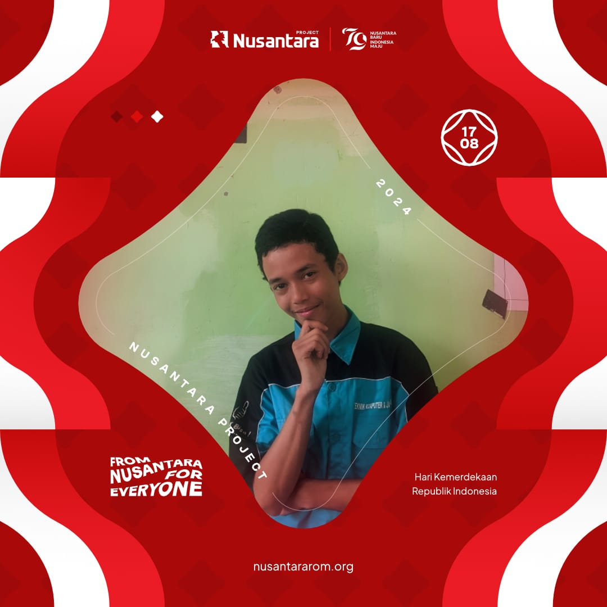

✓
Zhyllan Fyllah
✓
Jurusan TKJ (Teknik Komputer dan Jaringan)
RINGKASAN
Nama saya Zhyllan Fyllah. Saya telah menempuh pendidikan dasar dan menengah selama 9 tahun. Saat ini, saya sedang menempuh pendidikan di SMK N 1 Lembah Melintang, jurusan Teknik Komputer dan Jaringan (TKJ). Sekolah ini merupakan satu-satunya SMK unggulan di wilayah Ujunggading, yang dikenal baik dari segi kualitas mengajar, pembelajaran, maupun praktik kejuruan, serta memiliki enam program keahlian.
KEAHLIAN DAN KOMPETENSI
- Teknik Komputer dan Jaringan
- Penetrasi Jaringan Seluler
- Web Development
- Pengembangan Aplikasi (APK)
- Menguasai Bahasa Pemrograman CSS dan HTML